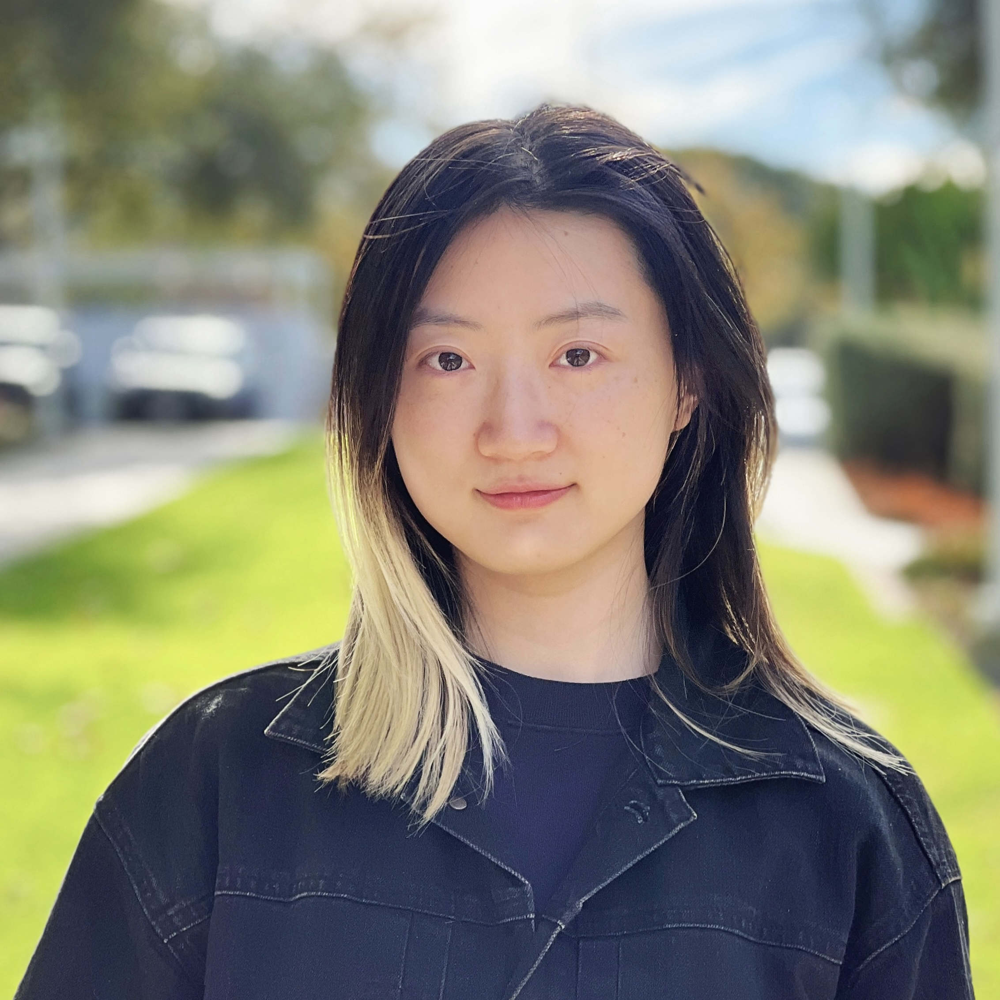

Hi I am Crystina, a third-year PhD student at University of Waterloo, supervised by Prof. Jimmy Lin. I received my Bachelor's degree in Computer Science at Hong Kong University of Science and Technology (HKUST). I'm currently a part-time Student Researcher in Google, and have previously interned at Cohere, Max Planck Institut für Informatik and NAVER (네이버) . I have exchanged to University of California, Los Angelas and University of Waterloo during my undergraduate.